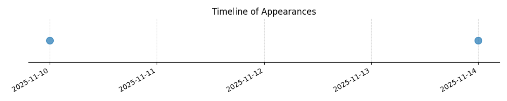

Kategorie: Letecké předpisy
Převodní nadmořská výška (transition altitude) je výška, ve které se pilot přestává řídit indikovanou nadmořskou výškou (QNH) a začíná se řídit standardní nastavením výškoměru (1013 hPa nebo FL). Tato výška je stanovena národními leteckými předpisy. V České republice je pro oblasti mimo horské oblasti a mimo přiblížení na většinu letišť stanovena na 5000 stop (1500 m).

| Datum výskytu |
|---|
| 2025-11-14 |
| 2025-11-10 |